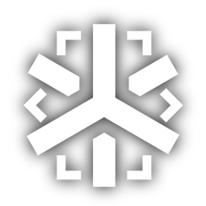
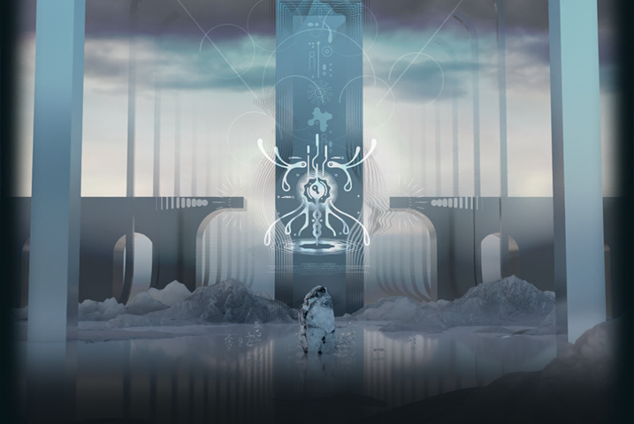
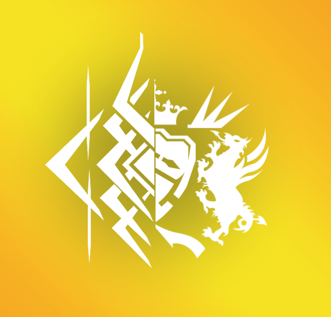

“When one is committed to constant reflection and tempering of is ideals, we are willing to serve as his forge”
Who we are
Rhodes Island Pharmaceuticals Inc. is a registered drug R&D company working on medical solutions for countries, organizations, and individuals infected with Oripathy. To achieve our goal, Rhodes Island recruits talent from all around the world, regardless of background, experience, or condition. Furthermore, Rhodes Island is committed to providing the best medical and living conditions for its employees, attracting movers and shakers - Infected or not - to try to change the world.

Our Mission
At Rhodes Island, we are committed to combat the oripathy crisis, developing novel medical equipment and medicines.
What drives us to keep going
The goal has no meaning if the path to reach it is not the correct one. We firmly believe that every individual, regardless of race or status, as the right to live a peaceful life and we are working to make that a reality.
What we have achieved
-

- Developers of the first effective oripathy suppressant
- We were the first to develope a safe compound that effectively slow and stop the spreading of the Oripathic infection.
-

- Envoys of the lands
- Rhodes Island was chosen by Iberia's Inquisition to be the official representatives of the lands in the first sea-land cooperation since over 200 years
-

- Victoria's Peacekeepers
- After many sacrifices, our intervention succesfully manage to put an end to the Victorian-Kazdelian War, saving thousands of lives.